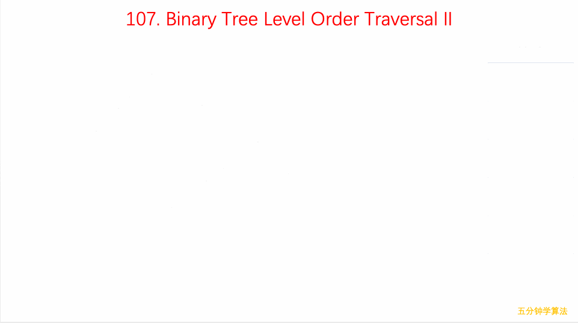

binary tree level order traversal ii
Given a binary tree, return the bottom-up level order traversal of its nodes' values. (ie, from left to right, level by level from leaf to root).
For example:
Given binary tree [3,9,20,null,null,15,7],
3
/ \
9 20
/ \
15 7
return its bottom-up level order traversal as:
[
[15,7],
[9,20],
[3]
]
class Solution {
public List> levelOrderBottom(TreeNode root) {
List> res = new ArrayList<>();
if (root == null) return res;
Queue queue = new LinkedList<>();
queue.add(root);
while (true) {
Queue temp = new LinkedList<>();
List cur = new ArrayList<>();
List sub = new ArrayList<>();
for (TreeNode q : queue) {
cur.add(q.val);
if (q.left != null) {
temp.add(q.left);
}
if (q.right != null) {
temp.add(q.right);
}
}
res.add(0, cur);
if (temp.isEmpty()) break;
queue = temp;
}
return res;
}
}